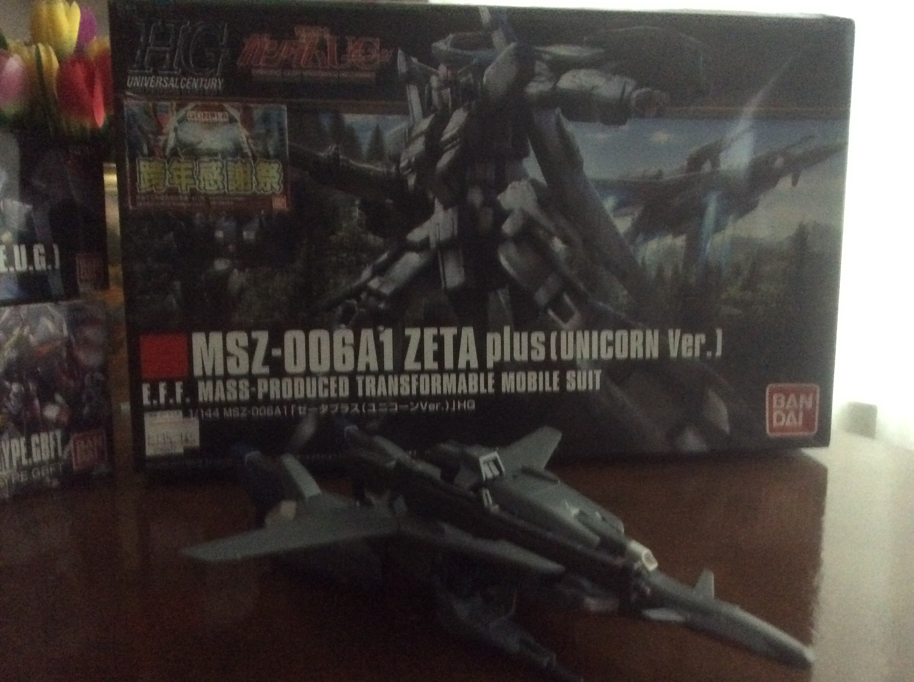

It’s finally time to look at the Zeta Plus.This will be the third and last review here since I only have three model kits and the outside world is still a potential biohazard zone.
Much like the MKII, the Zeta Plus has a fairly simple design with no immediately noticeable features to catch one's eye. In a similar fashion, this works well for the HG scale since it doesn't obscure any details on the machine. The kit is also easy to assemble, and the joints and connections are secure enough that they don't fall off or are hard to play around with when moving parts.
It’s almost completely gray color scheme however does make it a bit bland to look at. However it’s main appeal, in my opinion, is its’ ability to transform into a jet which gives you more options for dioramas and poses. This does come with slight issues since switching between the two configurations takes some effort. However this is to be expected of a HG scale model.
Overall, it’s another solid HG model kit even if its color scheme is on the bland side.